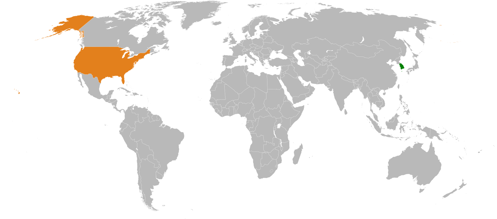

HoSeok Shin
Bachelor of Science, Information System
About Me
Hi everyone! I am a native Korean speaker who graduated from University of Maryland, Baltimore County with a Bachelor Degree in Science and the major was Information System.
Currently, I am looking for a job related to IT field. Especially, the areas that I am interested include database, web development, software development.
I really want to work in a position that uses coding because I love the logic and structure of coding.
I believe I have the abilities to make things to go forward. Also, I am really good at finding and fixing mistakes which is a good asset for the programmers.
Some of the programming languages that I am comfortable are MySQL, PL/SQL, HTML, PHP, CSS, JavaScript, and Java.
I hope you guys find something interesting in this page!
Project
Green Power System & Analytics
The objective of this project was to build a front as a web-based and end as an oracle database.
Each group was provided with smartplugs and modems that can measure the power consumption of appliances that are connected.
The data was collected as .csv file in excel. With SQL developer, our group imported all the data into SQL server and used it for making PL/SQL Server Page.
This project was sponsored by a software startup company called Constellation Energy.
(website is unavailable because we used the private server and the database was expired after the semester)
Ingredient Chef
This project was the first web project I did in my life. We have a group of five and had to build a website that allows users to search
for the food recipes based on the ingredients they already have. Each of us had to do one usecase and had to use JavaScript and Ajax somewhere in each of our usecases.
For our team, we had usecases of rating system, comment system, user login function, and my usecase was searching by ingredients and
filter function by certain characteristics. To be honest, the outlook of the website looks bad because we didn't really tried to look good
since the grades were based on the functionality. So, our group tried hard to make things work.
(this website is available, but most of the features do not work because the database was expired.)
View